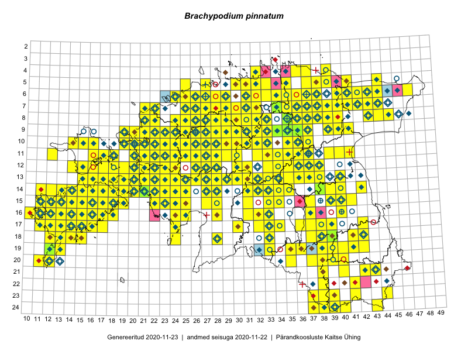

Brachypodium pinnatum
Uuendatud: 2016-12-02
Kaardile koondatud taksonid: Brachypodium pinnatum (L.) P.Beauv.

Kaart põhineb 547 kirjel, neist vaatlusi 538 ja eksemplare 9. Taksonit on leitud 278 ruudust.
Kuvatud viited 20 esimesele andmebaasikirjele, ülejäänud PlutoFis
- Tiit Hallikma, Toomas Kukk, Indrek Tammekänd: 2015-06-09: 12-28: ala
- Malle Leht: 2015-07-09: : ala
- Toomas Kukk, Eerik Leibak: 2015-08-09: 13-15: ala
- Malle Leht: 2015-08-02: : ala
- Toomas Kukk, Eerik Leibak: 2015-08-09: 14-15: ala
- Toomas Kukk, Eerik Leibak: 2015-08-08: 15-18: ala
- Toomas Kukk, Thea Kull, Timo Luhamäe, Ott Luuk, Peedu Saar: 2015-06-28: 13-26: ala
- Toomas Kukk, Peedu Saar: 2014-09-23: 07-42: ala
- Toomas Kukk, Peedu Saar: 2014-09-24: 06-41: ala
- Rein Kalamees, Kersti Püssa: 2015-08-31: 04-32: ala
- Rein Kalamees: 2015-08-09: 05-31: ala
- Ott Luuk, Toivo Sepp: 2015-07-29: 09-31: ala
- Ott Luuk, Peedu Saar: 2015-07-27: 11-35: ala
- Peedu Saar, Elle Roosaluste: 2015-07-12: 13-20: ala
- Peedu Saar: 2015-07-15: 15-39: ala
- Ott Luuk, Peedu Saar: 2015-08-13: 24-43: ala
- Peedu Saar, Ott Luuk: 2015-07-27: 10-35: ala
- Toomas Kukk, Peedu Saar: 2014-07-03: 14-21: ala
- Ott Luuk: 2015-06-28: 13-26: ala
- Peedu Saar, Liina Oja: 2015-06-12: 13-35: ala